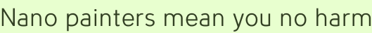

Nano painters mean you no harm
Do you want to be painted by ninety-nine evil robots living in your Macintosh™ computer, that has a camera attached to it? If YES then here is something large to click on:
Sorry to all the dozens of fans of embedding applets in actual web pages, on the internet, but this time it was not possible to be so obnoxious. Only the paragon of private and secure browsing, Adobe Flash, is allowed to activate your camera from ‘rich media’ and transmit images back to the mothership.
But this is totally worth the D/L guys! Made with Processing, obviously, and shortly written in Scala:
import processing.video._
size(800, 600)
val video = new Capture(applet, width, height, 6)
smooth()
strokeWeight(8)
// current positions
var pos_list = List[Point]()
keyPressed()
override def keyPressed() {
pos_list = List.tabulate(99, n => Point(width/2, height/2))
background(0xFFAAAAAA)
}
// circle of 20 points, radius of 10 with center at 0,0
val r = 10;
val circle = List.tabulate(20, PI*_/10).map( t =>
Point((cos(t)*r).toInt, (sin(t)*r).toInt)
)
def draw() {
video.read()
// if this is a real live frame
if (video.get(width/2, height/2) != -16777216) {
pos_list = pos_list.map { pos =>
val c = video.get(pos.x, pos.y)
// randomly select next point from circle around current
// with bias for similar colors and staying in bounds
val next = play(circle.map { circle_p =>
val p = pos + circle_p
(bounds(p) * similarity(c, video.get(p.x, p.y))) %> p
}: _*)
stroke(c)
line(pos.x, pos.y, next.x, next.y)
next
}
}
}
def bounds(p: Point) = if (
p.x > 0 &&
p.x < width &&
p.y > 0 &&
p.y < height) 1 else 0
def similarity(a: Color, b: Color) =
1 + 10 / max(1, ((a.r - b.r)*^2 + (a.g - b.g)*^2 + (a.b - b.b)*^2))
case class Point(x: Int, y: Int) {
def + (o: Point) = Point(x + o.x, y + o.y)
}Can you spot the sneaky robots’ implicit conversions that access a growing assortment of handy operators?
This application is packaged as an example in Spde.
Codercomments
How about Webstart? I guarantee it will take you no more than 4 months to get it working.
I know! I have strategically decided to pretend that technology does not exist.
Hi This spde stuff is great…any chance of a windows build in the near future? I poked about a bit but couldn’t find one. Thanks!
The biggest holdup is that I lost my XP install disc—a legitimate one! It’s infuriating. I have it installed on a bootcamp partition, but I rarely reboot into it and want to reinstall XP under virtualbox (so I can write and test code for a Windows version of Spde, and other things). I extracted the license key from my install, but still need a CD to use it with.
That is lame, but it’s the reason. I’m open to advice on what people do in this situation! I’ve turned my apartment upside down looking for the dumb thing.
Never mind, it was surprisingly easy to find and download an XP iso (via HTTP!) and my totally legit licence key activated it, so I have XP up and humming in VirtualBox. When I have a Spde release for Windows I’ll post about it.
Ah, the activation blues. Thanks for suffering through that… Looking forward to spde windows!
It’s ready! Linux and Windows are now sharing an app-gen package in the torrents.
Holy higher order functions batman! I should have noticed this earlier!
Cheers!
Add a comment